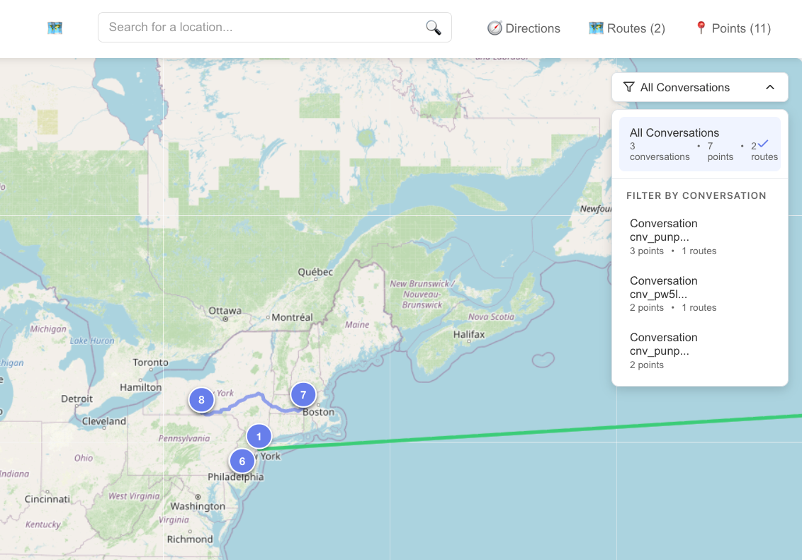
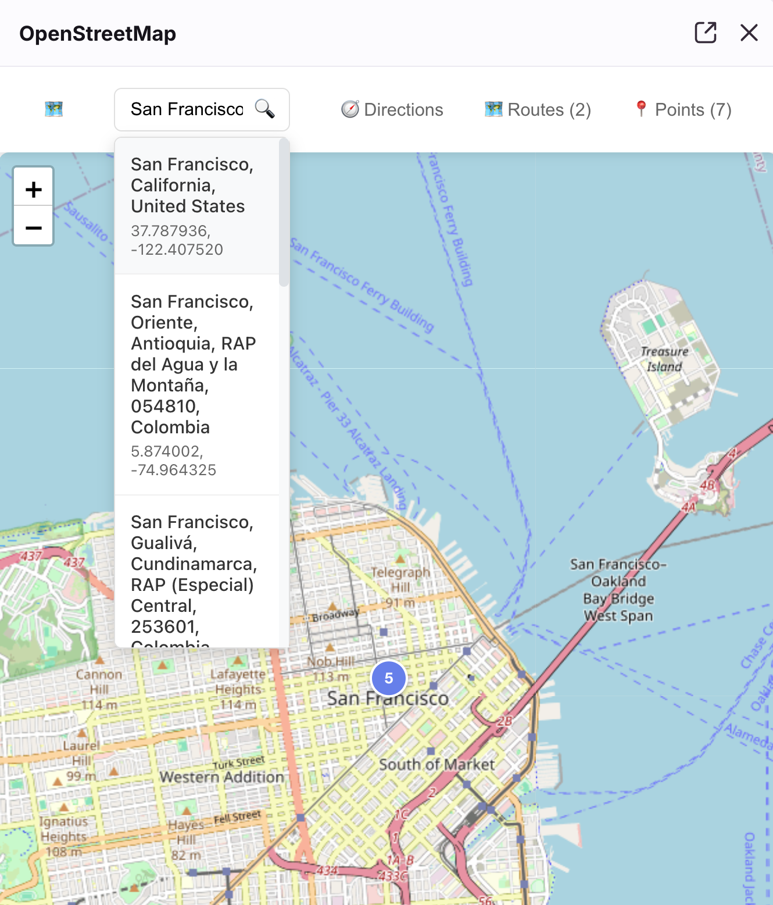
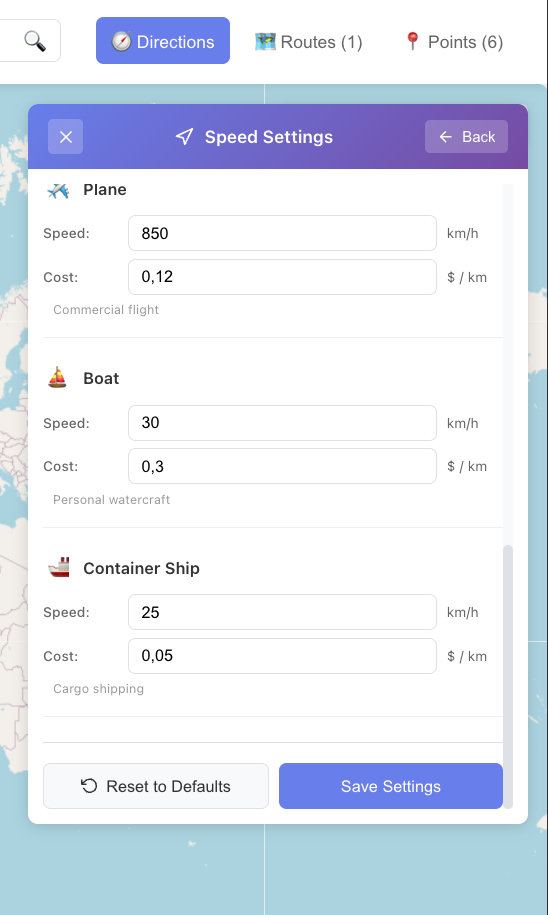
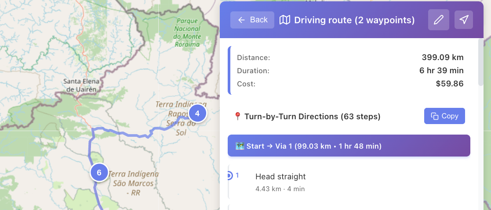

🗺️ Front OpenStreetMap Plugin
User Guide & Setup Instructions
🚀 Getting Started
- Install the app from the Front App Store
- Open the sidebar plugin in Front to get started
- No setup required - start using it immediately!
💬 See Locations Mentioned in Conversations
Automatically visualize locations mentioned in your current Front conversation on the map.

🔍 Filter by Conversation
View routes and points per conversation or all at the same time.
- Click on the conversation filter dropdown
- Select "Current Conversation Only" to see just the active conversation's locations
- Select "All Conversations" to see all locations from every conversation
- Or choose a specific conversation to focus on

🔎 Search Locations
Search for any location worldwide using the integrated search.
- Use the search bar at the top of the map
- Enter any address, city, or place name
- Select from the search results to navigate to that location

📍 Create Pinpoints
Mark and save important locations on the map with custom names.
- Click anywhere on the map to create a pinpoint
- Add a custom name to your pinpoint for easy reference
- Pinpoints are automatically saved and will persist across sessions

🛣️ Create Routes from Pinpoints
Build routes by connecting multiple pinpoints with turn-by-turn directions.
- Create or select multiple pinpoints on the map
- Click "Create Route" in the directions panel
- Select your transportation method
- View turn-by-turn directions and total distance

🚗 Transportation Modes
Choose from multiple transportation methods for your routes:
🚗 Driving
🚶 Walking
🚴 Bicycle
✈️ Plane
🚢 Boat
🚢 Container Ship

⚙️ Editable Speed and Cost Per Transport Method
Configure travel speed and costs for accurate route calculations.
- Open the Speed Settings panel (⚙️ icon)
- Configure speed (km/h or mph) for each transport method
- Set cost per kilometer/mile for each transportation type
- Settings are saved automatically

💰 Calculate Costs for Routes
Automatically calculate total costs for your routes based on distance and transport method.
- Create or select a route
- Choose your transportation method
- View automatic cost calculation in the directions panel
- See detailed cost breakdowns including distance and estimated time

🗺️ See Road, Terrain or Satellite Map
Switch between different map styles for different purposes.
- Click the layers icon in the top-right corner of the map
- Choose your preferred map style
Road
Best for navigation and street-level details
Terrain
Shows elevation and topography
Satellite
Aerial view for visual context

📦 Additional Features
💾
Save Routes
Store your routes for future reference and quick access
📊
Export Data
Export locations and routes to CSV format for external use
🔒
Persistent Storage
All your pinpoints and routes are saved locally in your browser
🧭
Turn-by-Turn Directions
Get detailed navigation instructions for your routes
Need Help? If you have questions or encounter any issues, please contact support through the Front app or visit our GitHub repository.